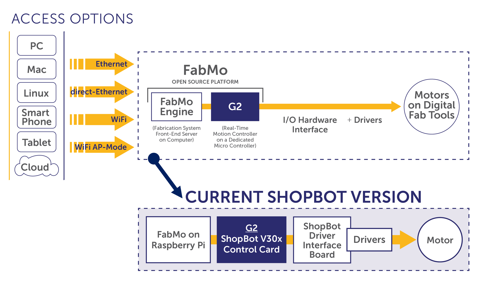
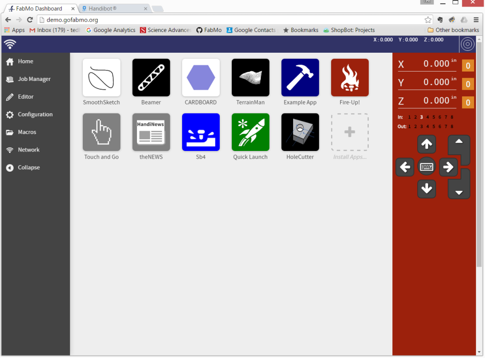

We set out some years ago to build a new kind of software for running CNC and digital fabrication tools -- the computer-controlled machines that shape parts either by subtraction, cutting and machining components from blocks and sheets of material, or by addition, building items up from raw material. Years earlier, ShopBot had helped show that industrial automation could be made affordable by harnessing the then-new personal computer. A new generation of microcontrollers now makes it possible to put even more capability, at lower cost, into the control of robotic equipment. We needed that capability for our own machines, so we developed it -- for ourselves, and for anyone else who wants to put it to use.
The highest priority of any CNC tool is to machine well -- and everything else FabMo offers is built on top of that. FabMo's enhanced hardware and low-level motion core provide sophisticated, near-real-time motion-planning. Fifth-order, "S"-shaped acceleration profiles minimize "jerk" and produce confident, brisk moves, while high-resolution timing yields smooth surfaces and graceful fabrication action. Underlying this is the inherent accuracy of digital stepper motion, which never accumulates incremental error -- a tool is just as accurate at 80 inches as at 8. ShopBot has carried this motion system forward through years of independent refinement, to the point of step-error-free operation across millions of moves in extended production runs. Quality of cutting and efficiency of production both start here, with smooth motion and snappy action.
FabMo opens new paths of access to your tool. Because it's built on standard networking, almost any smart device with a browser -- a phone, tablet, laptop, or desktop -- can run and monitor your FabMo equipment. Choose the access route that suits your shop: hard-wired for industrial robustness, or wireless for convenience. Where cybersecurity matters -- schools, government and military sites, secure corporate floors -- FabMo can also run completely disconnected from any network. You can attach a screen and keyboard directly to the Raspberry Pi server and run the tool entirely off-line, or, if you need on-board CAD/CAM, connect a single PC to the tool by ethernet cable with no outside network at all. A long-standing frustration of CNC has been tool interfaces with restrictive connectivity and little interoperability; FabMo removes that limitation while leaving the security decision entirely in your hands.
CNC tools are used across a wide range of environments by operators with very different skills and interests. The FabMo interface makes setting up your tool and running a job easy, with straightforward starting, monitoring, and file-management, plus built-in help and coaching for newer users. Operators already familiar with ShopBot will find a "classic" interface they recognize, alongside additional helpful tools and production resources built right into the platform. Develop job files on your tool-connected device, or post them from portable memory, your network, or -- if you choose to connect -- your cloud storage; you can always keep all work local for security. FabMo supports a wide range of workflows, from traditional CAD > CAM to a variety of "app" types (see below), and reads several motion languages including g-code and OpenSBP. While you work, FabMo's dynamic planning makes near-real-time interactive control possible: positioning the tool from the keyboard, spinning up precise axis motion with a jog wheel, driving 2D or 3D positioning with a mouse, or even guiding simple machining by hand.
This is where FabMo most extends what a CNC tool is and can do. It's programmable in three escalating ways. First, ShopBot's OpenSBP toolpath language is far more programmable than g-code: a conversational, BASIC-like language with variables, logic, and looping, so a great deal of customization can happen right inside the cutting files -- from a one-button move to a standard position, to production routines that move parts and people through a job. Second, a Macro library provides simple, quick functions for everyday production; many "canned cycles" ship ready to use, and users can add unlimited custom Macros of their own. Third, and most powerful, FabMo provides an API for "mini-apps" -- single-purpose programs written in the familiar languages of the web that run right on the platform. Apps can handle routine utility jobs or serve up complex, customer-customizable fabrication projects. To get you started there's an existing app library, worked examples showing how apps are built, and a prompt system for generating apps with AI. Together, these turn a fabrication tool into an open environment for new kinds of human-machine creativity and productive work.
FabMo was designed with the Industrial Internet of Things (IIoT) and Industry 4.0 in mind. Smart sensing and reporting can help optimize production tools for both productivity and quality. A wide range of inputs -- digital, analog, and video -- can flow into FabMo over multiple channels to track measures such as spindle performance and current draw, cutting vibration, positioning, and running times. This capability is still developing, but it's actively in progress, and it points toward tools that increasingly help operators tune performance and anticipate maintenance.
FabMo is a digital fabrication and motion platform of software and hardware. At its core is a powerful motion system that prioritizes smooth, snappy machining. Around that core, FabMo provides a straightforward, intuitive control interface and an open app-and-API environment that supports extensive customization and production integration. FabMo was developed by ShopBot Tools for our own CNC equipment; today it is ready to run ShopBots and offers a familiar, compelling interface to anyone already experienced with them. But FabMo was built with adaptability in mind: it is open source and designed to be configured for a wide range of digital smart tools, today and tomorrow.
Go FabMo: to create, produce, and manufacture precisely and efficiently, in adaptable ways that strengthen your production process.
We set out some years ago to build a new kind of software for running CNC and digital fabrication tools -- the computer-controlled machines that shape parts either by subtraction, cutting and machining components from blocks and sheets of material, or by addition, building items up from raw material. Years earlier, ShopBot had helped show that industrial automation could be made affordable by harnessing the then-new personal computer. A new generation of microcontrollers now makes it possible to put even more capability, at lower cost, into the control of robotic equipment. We needed that capability for our own machines, so we developed it -- for ourselves, and for anyone else who wants to put it to use.
FabMo offers CNC users five fundamental capabilities:
The highest priority of any CNC tool is to machine well -- and everything else FabMo offers is built on top of that. FabMo's enhanced hardware and low-level motion core provide sophisticated, near-real-time motion-planning. Fifth-order, "S"-shaped acceleration profiles minimize "jerk" and produce confident, brisk moves, while high-resolution timing yields smooth surfaces and graceful fabrication action. Underlying this is the inherent accuracy of digital stepper motion, which never accumulates incremental error -- a tool is just as accurate at 80 inches as at 8. ShopBot has carried this motion system forward through years of independent refinement, to the point of step-error-free operation across millions of moves in extended production runs. Quality of cutting and efficiency of production both start here, with smooth motion and snappy action.
FabMo opens new paths of access to your tool. Because it's built on standard networking, almost any smart device with a browser -- a phone, tablet, laptop, or desktop -- can run and monitor your FabMo equipment. Choose the access route that suits your shop: hard-wired for industrial robustness, or wireless for convenience. Where cybersecurity matters -- schools, government and military sites, secure corporate floors -- FabMo can also run completely disconnected from any network. You can attach a screen and keyboard directly to the Raspberry Pi server and run the tool entirely off-line, or, if you need on-board CAD/CAM, connect a single PC to the tool by ethernet cable with no outside network at all. A long-standing frustration of CNC has been tool interfaces with restrictive connectivity and little interoperability; FabMo removes that limitation while leaving the security decision entirely in your hands.
CNC tools are used across a wide range of environments by operators with very different skills and interests. The FabMo interface makes setting up your tool and running a job easy, with straightforward starting, monitoring, and file-management, plus built-in help and coaching for newer users. Operators already familiar with ShopBot will find a "classic" interface they recognize, alongside additional helpful tools and production resources built right into the platform. Develop job files on your tool-connected device, or post them from portable memory, your network, or -- if you choose to connect -- your cloud storage; you can always keep all work local for security. FabMo supports a wide range of workflows, from traditional CAD > CAM to a variety of "app" types (see below), and reads several motion languages including g-code and OpenSBP. While you work, FabMo's dynamic planning makes near-real-time interactive control possible: positioning the tool from the keyboard, spinning up precise axis motion with a jog wheel, driving 2D or 3D positioning with a mouse, or even guiding simple machining by hand.
This is where FabMo most extends what a CNC tool is and can do. It's programmable in three escalating ways. First, ShopBot's OpenSBP toolpath language is far more programmable than g-code: a conversational, BASIC-like language with variables, logic, and looping, so a great deal of customization can happen right inside the cutting files -- from a one-button move to a standard position, to production routines that move parts and people through a job. Second, a Macro library provides simple, quick functions for everyday production; many "canned cycles" ship ready to use, and users can add unlimited custom Macros of their own. Third, and most powerful, FabMo provides an API for "mini-apps" -- single-purpose programs written in the familiar languages of the web that run right on the platform. Apps can handle routine utility jobs or serve up complex, customer-customizable fabrication projects. To get you started there's an existing app library, worked examples showing how apps are built, and a prompt system for generating apps with AI. Together, these turn a fabrication tool into an open environment for new kinds of human-machine creativity and productive work.
FabMo was designed with the Industrial Internet of Things (IIoT) and Industry 4.0 in mind. Smart sensing and reporting can help optimize production tools for both productivity and quality. A wide range of inputs -- digital, analog, and video -- can flow into FabMo over multiple channels to track measures such as spindle performance and current draw, cutting vibration, positioning, and running times. This capability is still developing, but it's actively in progress, and it points toward tools that increasingly help operators tune performance and anticipate maintenance.

Diagram of FabMo. Top line shows the general model of FabMo for digital Fabrication -- the connection from a device in the world, to a tool's motion system, and the electronic and mechanical hardware that support it. The lower portion of the diagram shows the current ShopBot/Handibot instantiation of FabMo by way of detailed example, as well as other options available to developers and OEMs.
FabMo is based on two hardware components: 1) an SBC (single board computer) on which the "Engine" - interface, communications, and management systems - runs; and 2) a microprocessor the provides real-time environment for the "Core", G2, motion functions.
FabMo is a collection of software components and well-documented APIs. The FabMo Engine, running in linux on the tool's SBC, connects a digital fab tool to the world; handles local user needs; manages the flow of jobs to the real-time core.
Programmed primarily in javascript and node.js, the FabMo Engine serves up a contemporary, mobile-friendly web interface. Several base modules provide run-times for different digital-fab-tool path languages and serve as models for creating others.
More importantly, FabMo provides a framework for developing and hosting "apps" that will contribute a wide range of usability to digital fab tools. App Developer Resources include definitive and documented "example apps" that serves as a template for app development as well as several more specific examples. Apps are written in the languages of the web (HTML, Javascript, Coffeescript, CSS, etc) so that as tools for the web grow, so do our tools for doing digital fabrication!
The FabMo "G2 Core" resides on the ARM microcontroller. It represents work of the Synthetos team. G2 is a sophisticated motion system: high speed (high step rates), advanced "S" shaped ramping for smooth and efficient accelerations and decelerations, all running in real time and not requiring fussing with PC timing functions or USB converters.

FabMo "Dashboard" Interface. Showing system apps (left panel), apps area, and Digital Read Out (DRO; optionally displayed on right).
There are lots of good examples online of apps that use fabmo.js and the Handibot Dashboard - Choose one of interest and you can check it out here. (Note that when opened here they will open in your full browser and not the Dashboard.)
Open up our virtual FabMo Dashboard to see the look and feel of the interface and apps in action. This is just like running a real tool ...
Check out the API documentation for the details on making use of FabMo functionality in your own apps.
And there is always the FabMo project itself on GitHub. Code, apps, and resources. Join the community.
FabMo has been implemented for the Version 2 generation of Handibots. Handibot provides and example and test bed for demonstrating FabMo functionality and capabilities. Feel free to explore ...